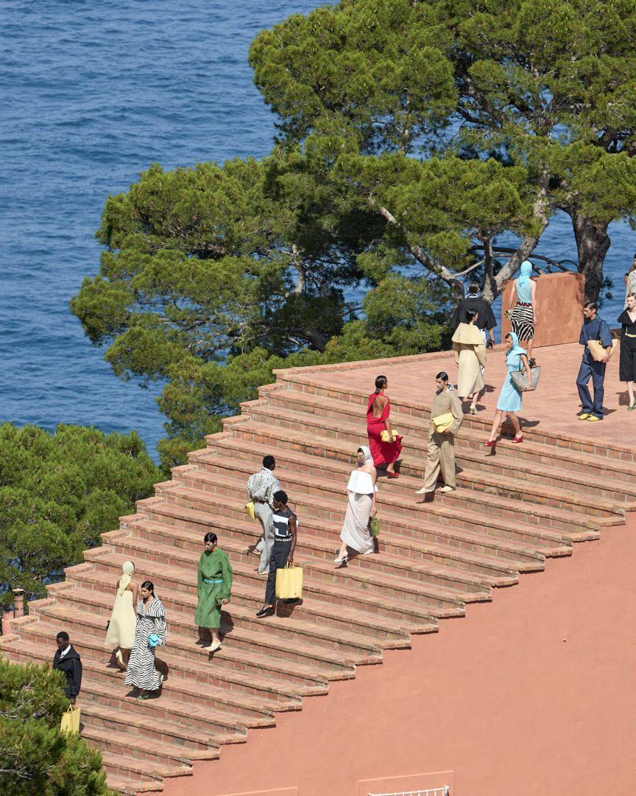
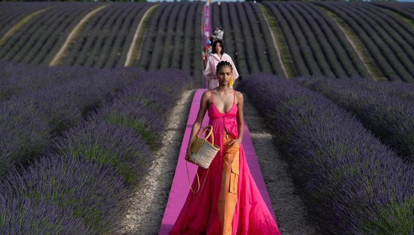
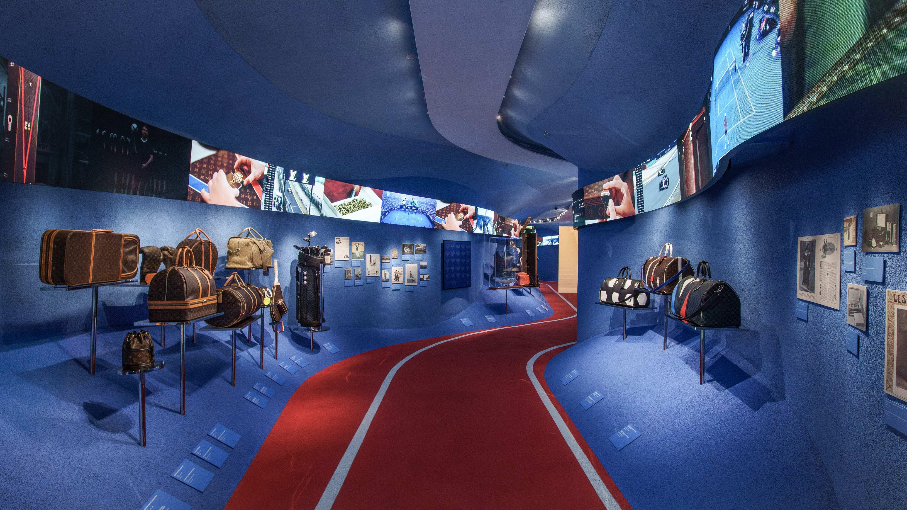

Beyond the Product:
Why Luxury Brands Are Building Worlds
A handbag can be copied. A silhouette can become a trend.
Even a logo can become overexposed. What is considerably
harder to reproduce is an entire world. As luxury expands
beyond the object into architecture, art, hospitality,
film and experience, the most powerful brands are no
longer simply asking what they should sell. They are asking
what it should feel like to enter their universe.

Jacquemus · La Casa · Casa Malaparte, Capri
For most of luxury's history, the product sat at the centre of the
brand. The dress demonstrated craftsmanship. The handbag became an
icon. The watch communicated precision. The perfume condensed an
identity into a bottle.
Those objects still matter. Without exceptional products, luxury
eventually becomes theatre without substance. But the relationship
between product and brand is changing.
A consumer can now encounter a fashion house dozens of times without
purchasing anything. They might watch its runway show on a screen,
save a campaign, visit an exhibition, walk through an architectural
installation or recognise the visual language of an image before
seeing the logo.
Luxury has therefore acquired another task: creating a universe
coherent enough that every one of those encounters feels as though
it belongs to the same place.
This is world-building. It is not simply marketing, and it is not
the same as putting a logo on more categories. At its strongest,
world-building transforms a collection of products, spaces and
images into a recognizable cultural language.
The Object
Luxury used to sell possession. Now it increasingly sells participation.
The traditional logic of luxury was relatively straightforward.
Scarcity, craftsmanship, heritage and price separated an exceptional
object from an ordinary one.
That distinction has become more complicated. Fashion imagery travels
instantly. Trends move from runway to mass market at extraordinary
speed. Products are endlessly photographed, referenced and imitated.
A recognizable aesthetic can spread far beyond the company that
created it.
This makes the physical object both extraordinarily important and
strangely vulnerable. A handbag can remain proprietary. The cultural
associations surrounding it cannot.
For luxury brands, the response has been to build value around the
object rather than only inside it. Architecture, music, art direction,
exhibitions, runway locations, books, restaurants, digital content
and retail design can all reinforce the same identity.
Together, they create something much harder to replicate than an
individual product: context. The object becomes an entry point into
a larger system of meaning.
The Strategic Shift
The question is no longer only, “What does this brand make?”
Increasingly, it is: “What world does this brand allow you to enter?”

Jacquemus · Le Coup de Soleil · Provence
Geography as Identity
Sometimes a location can communicate more than a campaign.
Few contemporary brands demonstrate world-building as clearly
as Jacquemus. The house has developed a visual vocabulary that
extends far beyond clothing: southern light, landscape,
architecture, scale, sensuality and a carefully controlled
sense of the surreal.
Its runway locations have become part of that vocabulary.
Lavender fields in Provence, wheat fields outside Paris,
the salt flats of the Camargue, Versailles, Fondation Maeght
and Casa Malaparte have transformed the conventional fashion
show into an exercise in place-making.
These locations do more than create photographs. They establish
geography as part of the brand identity.
A model moving through lavender or descending the monumental
steps of Casa Malaparte does not need to stand beside a giant
logo. The environment itself communicates the brand.
Recognition
The strongest brand worlds can be recognized before the name appears.
That is one of world-building's most powerful effects.
When an identity becomes sufficiently coherent, consumers begin to
recognize its codes intuitively. Colour, landscape, casting,
architecture, photography, music and tone can communicate ownership
without relying on a monogram.
This moves branding away from simple visibility. The goal is no
longer to place the logo everywhere. It is to create associations
strong enough that the logo becomes almost unnecessary.
In that sense, world-building is not about making a brand louder.
It is about making it more legible.

Louis Vuitton · Immersive Heritage Exhibition
From Store to Cultural Space
The boutique is becoming something larger than a point of sale.
Louis Vuitton provides a different model of world-building.
The house has spent decades connecting fashion with travel,
architecture and contemporary art, allowing those associations
to extend well beyond conventional retail.
Its cultural ecosystem now includes exhibitions, artistic
collaborations, publishing, architectural projects and spaces
dedicated to presenting the history and creative vocabulary
of the house.
In these environments, products appear alongside archive
material, craftsmanship, images, objects and storytelling.
The visitor is not simply shown what Louis Vuitton sells.
They are shown how the brand understands itself.
The distinction between store, exhibition, museum and brand
communication begins to dissolve.
Culture as Infrastructure
Art is no longer simply something luxury borrows.
The relationship between fashion and culture is hardly new.
Designers have always borrowed from painting, cinema, music,
literature and architecture.
What has changed is the scale at which major houses can now
participate in producing culture themselves.
A brand can commission architecture, finance exhibitions,
collaborate with artists, publish books, restore historic spaces
and create institutions capable of existing beyond the seasonal
fashion calendar.
This changes the role of cultural association. A painting
referenced in a collection is inspiration. A sustained exhibition
programme or cultural institution is infrastructure.
The luxury house therefore begins to occupy an unusual position.
It remains a commercial company, but parts of its universe can
behave like a gallery, publisher, patron, restaurant, archive
or cultural institution.
The Economics of Attention
You do not have to own the product to participate in the brand.
World-building also responds to a commercial reality: most people
who encounter a major luxury house will never purchase its most
expensive products.
Digital media has changed what that means. A person can watch the
show, visit an exhibition, photograph an installation, share a
campaign, follow a creative director, listen to a soundtrack or
simply save an image.
From a traditional retail perspective, some of those interactions
appear economically insignificant. From a brand perspective, they
can be enormously valuable.
They produce familiarity, aspiration and cultural relevance.
The audience for the brand therefore becomes much larger than
the customer base.
World-building creates a ladder of participation. At one end sits
the spectator. At the other sits the collector or high-spending
client. Both can understand and participate in the same universe.
Participation
The audience for luxury is now much larger than the group of people
buying it. World-building gives that audience somewhere to belong.
The Theme-Park Problem
A world is only powerful when people believe in it.
There is, however, a danger.
Once every fashion house wants a café, exhibition, hotel,
installation and cultural collaboration, world-building itself
can become formulaic.
The strategy works only when those extensions feel connected to
an authentic central identity. A Mediterranean landscape makes
sense for Jacquemus because place, sunlight and southern France
are embedded in the brand's vocabulary. Travel makes sense for
Louis Vuitton because the house's history began with trunks and
has repeatedly returned to the idea of movement.
Without that connection, experience becomes spectacle for
spectacle's sake.
A branded restaurant does not automatically create culture.
An artist collaboration does not automatically create artistic
credibility. A monumental store does not automatically make a
brand culturally important.
The strongest worlds have internal logic. The weakest simply
have expensive props.
Consistency Without Repetition
The challenge is to remain recognizable without becoming predictable.
World-building creates another paradox. A successful luxury brand
needs codes.
Colour, typography, architecture, materials, silhouettes,
photography and even tone of voice can help create recognition.
But if those codes are repeated too literally, identity becomes
formula.
Luxury therefore has to perform a difficult balancing act:
be familiar enough to be recognized and surprising enough to
remain desirable.
This may be why the strongest brand universes are built around
principles rather than rigid aesthetics.
Jacquemus does not need every show to take place in Provence.
What remains consistent is a particular relationship with
landscape, sensuality, scale and image-making.
Louis Vuitton does not need every project to resemble a trunk.
Travel can instead become a broader conceptual language
encompassing architecture, exhibitions, objects and movement.
A strong brand world is therefore not a mood board. It is a
system capable of generating new ideas.
The Brand Moat
Products can be reproduced faster than meaning.
This may be the most strategically important consequence of
world-building.
Fashion operates in an environment in which visual information
moves almost instantly. A silhouette can inspire copies within
weeks. A viral object can become ubiquitous before the original
brand has finished exploiting its success.
Meaning is harder to reproduce.
A competitor can produce a similar handbag. It cannot instantly
reproduce decades of archives, architectural spaces, cultural
relationships, creative directors, exhibitions, campaigns and
collective memory.
That accumulated universe becomes a form of competitive
protection — not because competitors are legally prevented from
imitating it, but because authenticity takes time.
The deeper the world, the harder it is to counterfeit.
Beyond the Product
The most powerful luxury brands may ultimately sell something
that cannot be put in a shopping bag.
Luxury will always need objects.
The craftsmanship of a garment, the construction of a handbag
and the precision of a watch remain fundamental. World-building
cannot rescue a product that nobody desires.
But objects increasingly exist inside something larger.
The modern luxury house is becoming part retailer, part
storyteller, part cultural producer and part architect of
experience. Its competitive advantage may depend not simply
on making desirable things, but on constructing a coherent
universe in which those things acquire meaning.
That changes what brand strategy looks like.
The question is no longer whether a consumer recognizes the logo.
It is whether they recognize the world before the logo even appears.
Perhaps that is the ultimate ambition of luxury branding:
to create something so distinctive that entering the brand
feels less like encountering a product and more like arriving
somewhere.
Sources & Further Reading
Jacquemus —
brand history, creative influences and the house's use of
landscape, architecture and unconventional runway locations.
Louis Vuitton —
arts and culture initiatives, exhibition spaces and the
development of cultural experiences beyond conventional retail.
Fondation Louis Vuitton —
exhibitions, architecture and international cultural programming.
LVMH —
Louis Vuitton cultural initiatives, immersive exhibitions
and the development of brand spaces combining heritage,
experience and commerce.
Prada Group —
cultural projects and the relationship between fashion,
architecture, art and contemporary culture.
McKinsey & Company —
research on luxury consumer behaviour, experience,
digital engagement and changing expectations of luxury brands.
Bain & Company —
analysis of the global luxury market, consumer engagement
and the evolving relationship between luxury products and
experiences.